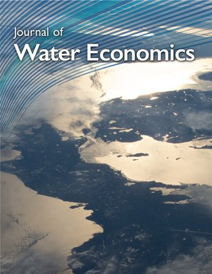

Together with Roy Brouwer, I serve as Editor-in-Chief of the Journal of Water Economics, an open-access journal dedicated to research on the economics of water. The journal publishes theoretical, empirical, and policy-focused contributions on water allocation, governance, management, and related environmental issues. Here are links to the journal homepage, accepted papers, and submission information.